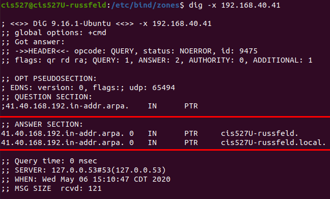
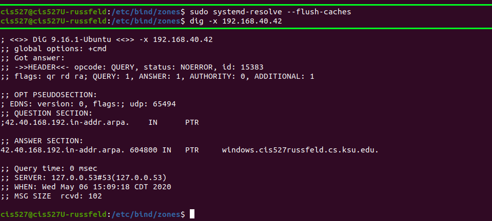
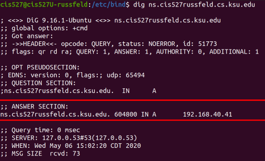
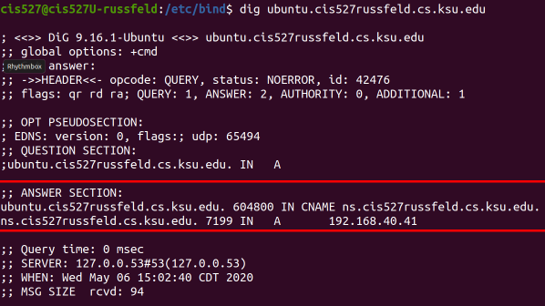
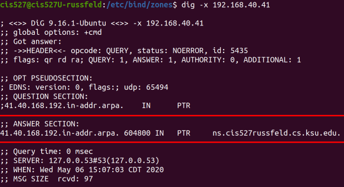

As I was reworking this lab for the Summer 2020 semester, I ran into a few issues getting my own bind9 server to work. In doing so, I ended up taking some great screenshots of common misconfigurations of bind9 and the related output from using the dig command to diagnose the issue. I figured it would be helpful to share those screenshots here to give you a nice guide to some common errors you may encounter when working with bind9.
Incorrect Screenshots
Bad PTR Response

In this screenshot, I attempted to do a reverse lookup of 192.168.40.41, which should resolve to ns.cis527russfeld.cs.ksu.edu. This test was done from the machine with that IP address. Unfortunately, my server was misconfigured, and the reverse zone file was not properly included (the path in my named.conf.local file had a typo, to be exact). Since that file was not availble, my system returned the response from it’s local DNS information, showing that the IP address 192.168.40.41 belongs to cis527U-russfeld., which is the name of the actual computer and not its name in the DNS system. This can happen if you try to request information about the local system and the DNS server does not contain the correct information.
No PTR Response

With the same misconfiguration as described above, when I query a different system, such as 192.168.40.42, I instead get an empty response as shown here. This is the usual situation if the DNS server is misconfigured and the PTR record cannot be found. If the output of dig is missing an answer section, it usually indicates that the lookup failed.
Missing Period

So, I corrected my error and restarted my bind9 server, and once again tried to query one of my reverse lookup addresses. However, in this case, I did get a response from the DNS server, but it was incorrect. The address returned when I queried 192.168.40.42 as windows.cis527russfeld.cs.ksu.edu.40.168.192.in-addr.arpa, which is not what I wanted. This can happen when you forget to add the all important period at the end of an entry in your zone file.
That one, right there. If you forget that one, the bind9 DNS server will automatically append a whole bunch of domain information after the address. Sometimes we want that, but in this case, we don’t. So, be very careful and don’t forget the periods.
DNS Caching

In this screenshot, I had just resolved the error above and restarted my bind9 server to load the newly changed files. Then, I once again used dig to query 192.168.40.42, expecting to see the correct output. Instead, I still received the incorrect output as seen in the screenshot above. This is a very common problem!
There can be a couple of causes of this issue. First, whenever you update a zone file, don’t forget to change the serial value to a larger number. The DigitalOcean guide just has you start with 2 and go to 3 and so on. I like to use the date, followed by a serial for that day. So, I would use a serial such as 202005061 for the first update made on May 6th, 2020 (2020-05-06).
Secondly, even if you remember to do that, many modern systems employ some form of DNS caching that stores the responses from previous queries. Both Ubuntu and Windows do this automatically. So, you may also have to clear your DNS cache to make sure it is properly querying the server. On Ubuntu, use sudo systemd-resolve --flush-caches and on Windows use ipconfig /flush-dns.

Immediately after flushing the DNS cache, I was able to perform the query again and get the correct result.
Correct Screenshots
Below are screenshots showing correct output for various dig commands. You may use these screenshots to help in your debugging process. To take these screenshots, I updated the static IP address configuration for the Ubuntu Server to use it’s own IP address 192.168.40.41 as the only DNS server.
Correct A Records


Correct CNAME Records

Correct PTR Record

Correct Recursive Lookup (Outside our DNS Server)